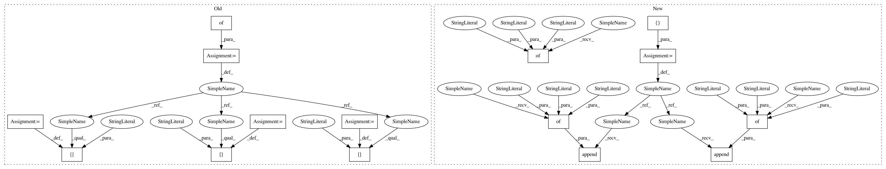

645202b1e62d323d79936eea9452ef3b58084826,official/resnet/keras/keras_benchmark.py,KerasBenchmark,_report_benchmark,#KerasBenchmark#Any#Any#Any#Any#Any#Any#Any#,60
Before Change
warmup: number of entries in stats["step_timestamp_log"] to ignore.
extras = {}
if "accuracy_top_1" in stats:
extras["accuracy_top_1"] = self._json_description(
stats["accuracy_top_1"],
priority=0,
min_value=top_1_min,
max_value=top_1_max)
extras["top_1_train_accuracy"] = self._json_description(
stats["training_accuracy_top_1"], priority=1)
if (warmup and "step_timestamp_log" in stats and
len(stats["step_timestamp_log"]) > warmup):
// first entry in the time_log is start of step 1. The rest of the
// entries are the end of each step recorded
time_log = stats["step_timestamp_log"]
elapsed = time_log[-1].timestamp - time_log[warmup].timestamp
num_examples = (
total_batch_size * log_steps * (len(time_log) - warmup - 1))
examples_per_sec = num_examples / elapsed
extras["exp_per_second"] = self._json_description(
examples_per_sec, priority=2)
if "avg_exp_per_second" in stats:
extras["avg_exp_per_second"] = self._json_description(
stats["avg_exp_per_second"], priority=3)
After Change
warmup: number of entries in stats["step_timestamp_log"] to ignore.
metrics = []
if "accuracy_top_1" in stats:
metrics.append({"name": "accuracy_top_1",
"value": stats["accuracy_top_1"],
"min_value": top_1_min,
"max_value": top_1_max})
metrics.append({"name": "top_1_train_accuracy",
"value": stats["training_accuracy_top_1"]})
if (warmup and "step_timestamp_log" in stats and
len(stats["step_timestamp_log"]) > warmup):
// first entry in the time_log is start of step 1. The rest of the
// entries are the end of each step recorded
time_log = stats["step_timestamp_log"]
elapsed = time_log[-1].timestamp - time_log[warmup].timestamp
num_examples = (
total_batch_size * log_steps * (len(time_log) - warmup - 1))
examples_per_sec = num_examples / elapsed
metrics.append({"name": "exp_per_second",
"value": examples_per_sec})
if "avg_exp_per_second" in stats:
metrics.append({"name": "avg_exp_per_second",
"value": stats["avg_exp_per_second"]})
self.report_benchmark(iters=-1, wall_time=wall_time_sec, metrics=metrics)
In pattern: SUPERPATTERN
Frequency: 3
Non-data size: 15
Instances
Project Name: tensorflow/models
Commit Name: 645202b1e62d323d79936eea9452ef3b58084826
Time: 2019-04-11
Author: donglin@google.com
File Name: official/resnet/keras/keras_benchmark.py
Class Name: KerasBenchmark
Method Name: _report_benchmark
Project Name: tensorflow/models
Commit Name: 294660bd9d374b4446cb758942cfc8951cc61ff2
Time: 2019-04-29
Author: tobyboyd@google.com
File Name: official/recommendation/ncf_keras_benchmark.py
Class Name: KerasNCFRealData
Method Name: _extract_benchmark_report_extras
Project Name: tensorflow/models
Commit Name: 645202b1e62d323d79936eea9452ef3b58084826
Time: 2019-04-11
Author: donglin@google.com
File Name: official/resnet/estimator_cifar_benchmark.py
Class Name: EstimatorCifar10BenchmarkTests
Method Name: _run_and_report_benchmark
Project Name: tensorflow/models
Commit Name: 645202b1e62d323d79936eea9452ef3b58084826
Time: 2019-04-11
Author: donglin@google.com
File Name: official/resnet/keras/keras_benchmark.py
Class Name: KerasBenchmark
Method Name: _report_benchmark